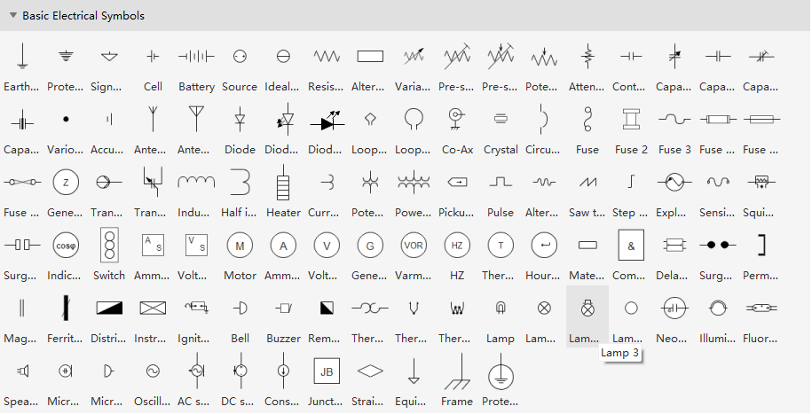
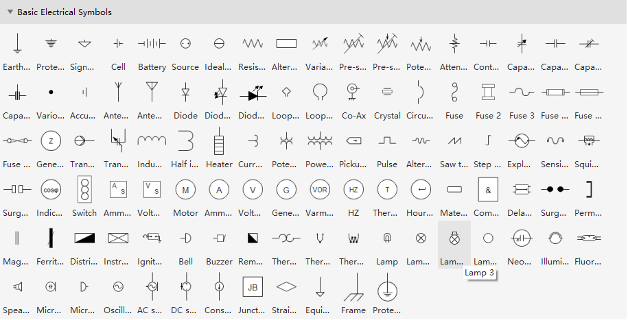
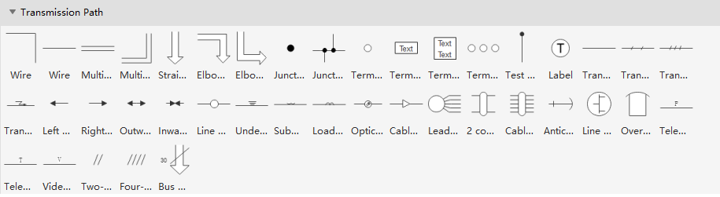
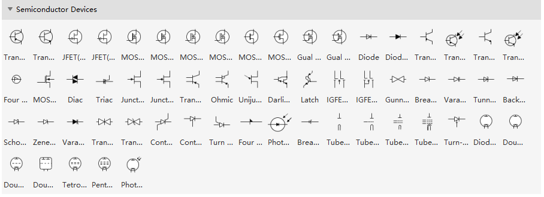
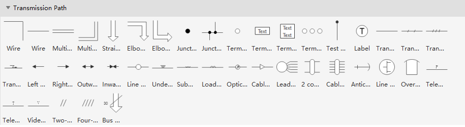
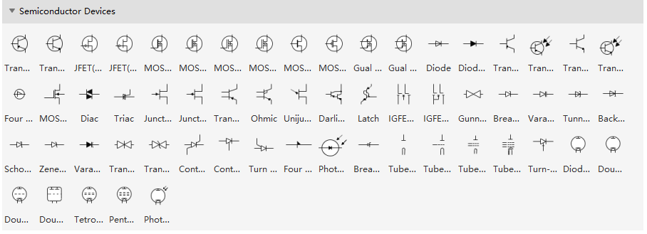
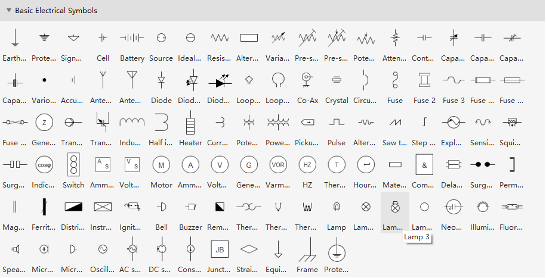
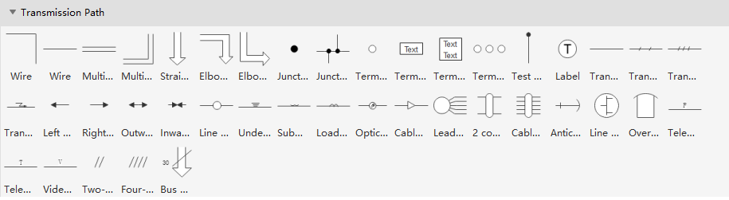
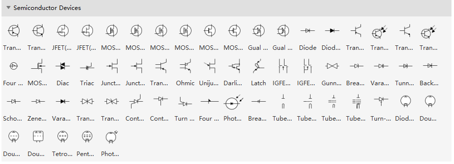

 



Transistors regulate electricity through traces and wires.
Learned:
Traces:
-Microtrace
Radiates into the air and the plane
-Stripline
radiates only into the plane in a 360 view
Plane:
- Layers of planes
- Materials
Via:
Sizes:
Small:
- 0.5mm Space, 0.2mm hole
Medium:
-
Large:
-
EMI:
Radiation or interference when electicity passes
Electrical Engineering:
On DC Electricity travels through traces at different voltages depending on if they
On AC Electricity travels through the one with the least impedence depending on frequency
Electricity travels in a line but radiates energy into and out of the board
IC(Integrated Circuits):
Learned about the different parts that go into a circuit to make it function
IEC Symbols are more compact
Nema rated ones are more expensive but catered to larger devices



Transistors regulate electricity through traces and wires.
Learned:
Different keycap profiles,
Sculpted:
Each keycap row has different textures in order to make typing
more comfortable
Measurement:
Keycaps have a size of 0.75 IN or 1 U - refers to one key size
Stabilizers:
I need stabilizers for the bigger keys such as tab, space and shift
This will prevent it from wobbling around
KICAD - EDA Software
Learned how to trace onto a plane of a pcb, change size of via's
Place different components that i need
The PCB will have four layers with a custom dimension.
Work in progress for Battery schematic

Accomplishments
In order to get a hands on experience and learn faster and better
Developed a concept pcb in which i use EE symbols and IC - Integrated Circuits
to be able to get a grasp on it, it is all theorethical but logical in which the
pcb would function
Reflection and Timeline